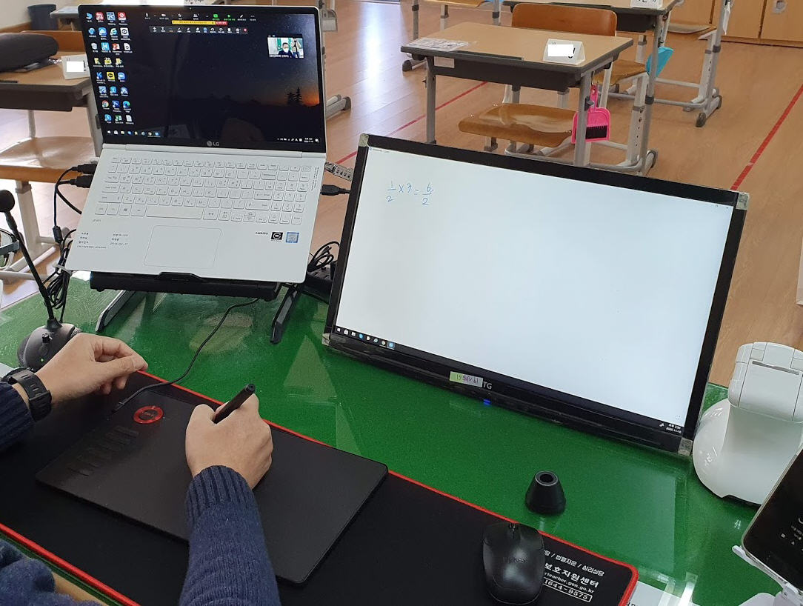

IT fit, 당신에게 더 잘 맞는 IT 사무 환경!
나의 노트북 환경... 이대로 괜찮을까?
노트북은 언제나 훌륭한 업무도구 입니다. 하지만 가끔 느껴지는 이 답답함.... 왜그럴까요?

남들은 어떻게 하는거지? 어디서 부터 시작해야 하는거지?
뭔가 감도 안잡히는 어려운 제품설명과 방법? 어떻게 해야 할까요?
노트북을 사용하기 위한 더 나은 IT 환경 개선! IT fit이 함께합니다.
더 빠르게, 더 쉽게 더 나은 정보를 얻어보세요! 판매주소까지 연결된 친절함!.
copyright seungjin hong
추신: 진지해서 궁서체